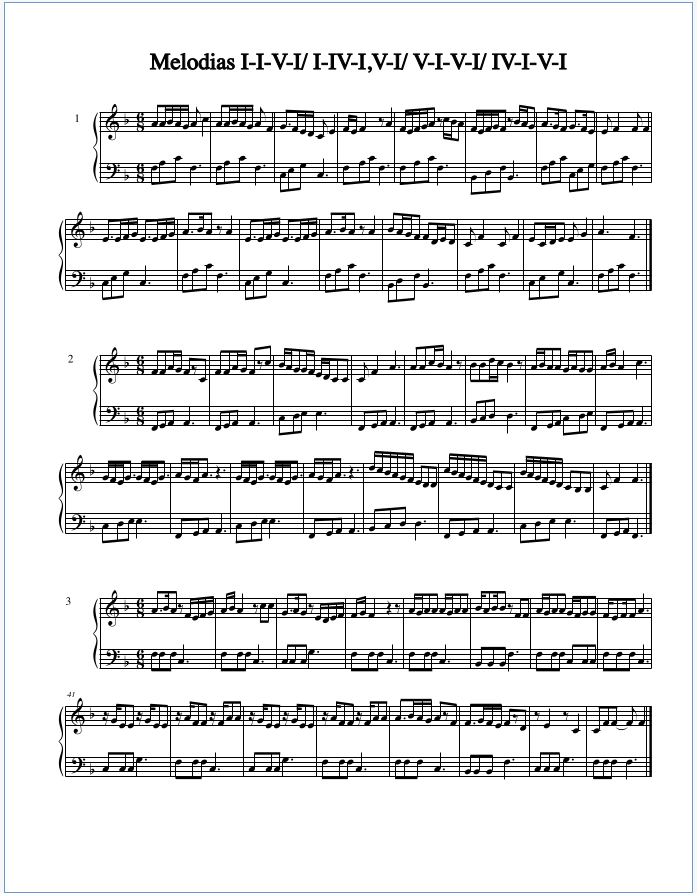

Semana 06 Curso 2022/2023
Profesora Pilar Ariño
Homework dated 28 October 2022
Table of Contents
1º Repasar las melodías de la semana anterior los audios en el aula virtual.
2º Terminar los dictados de clave de Fa del aula virtual y hacer 5 dictados de una sola melodía en la pagina web https://www.teoria.com/es/. Entra en Ejercicios/Entrenamiento Auditivo/Escalas, melodías/ y selecciona Dictado melódico. Eliges el nivel, e.g. 3 notas, 5 notas, negras, corcheas, etc.
3º Volver Completar tonalidades y estudiar el orden de # y b. 1
{kind=link}
4º Practicar los ritmos que hemos trabajado en clase, mando audio en el aula virtual y el pdf en este correo.
5º Cantar la melodía nº 1 del libro canciones para cantar 4, te recuerdo que en el aula virtual tienes el audio del acompañamiento de piano de la melodía (recordar que en la carpeta de audios 6ª semana, tenéis los audios grabados en clase)
Os paso los siguientes enlaces https://youtu.be/0VqTwnAuHws y https://youtu.be/BgAlQuqzl8o
Melodías de la Semana Anterior, repaso

Figure 1: Melodías 3.1, Repaso de la Semana Anterior
Figure 2: Melodías 3.2, Repaso
Figure 3: Melodías 3.3, Repaso

Figure 4: Melodías 3.4, Repaso
Figure 5: Melodías 3.5, Variaciones de Mozart.
Figure 6: Melodías 3.6, Variaciones sobre un tema de Mozart, en tonalidad menor
Figure 7: Melodías Peteneras, parte 1
Figure 8: Melodías Peteneras, parte 2
Página 15 unidad de petenera
Variaciones de la Petenera, página 11, aula virtual
Ritmos
Figure 9: 4º Elemental Ritmo, 1
Figure 10: 4º Elemental, Ritmo percusión
Melodía 1 del Libro de canciones
Acompañamiento de Piano
Footnotes:
Apéndice, El siguiente recorte muestra el orden en que se escriben los # y b en la armadura de la partitura.
Figure 11: Oden en que se escriben # y b